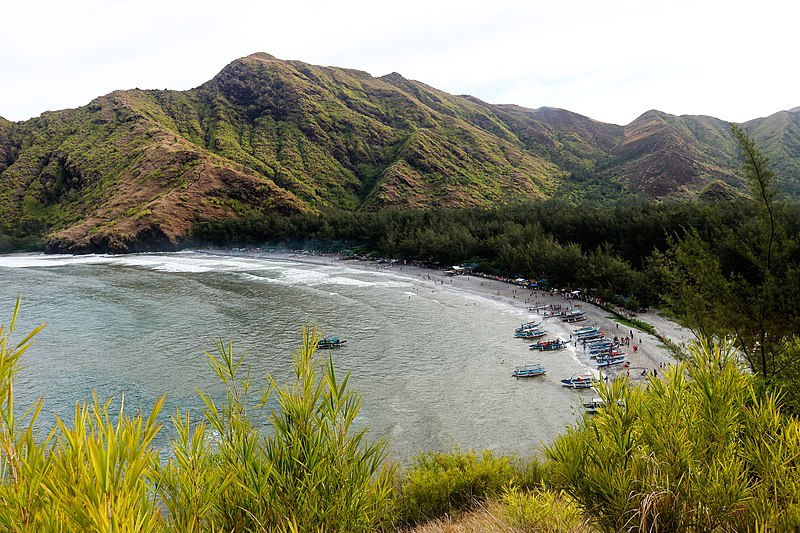
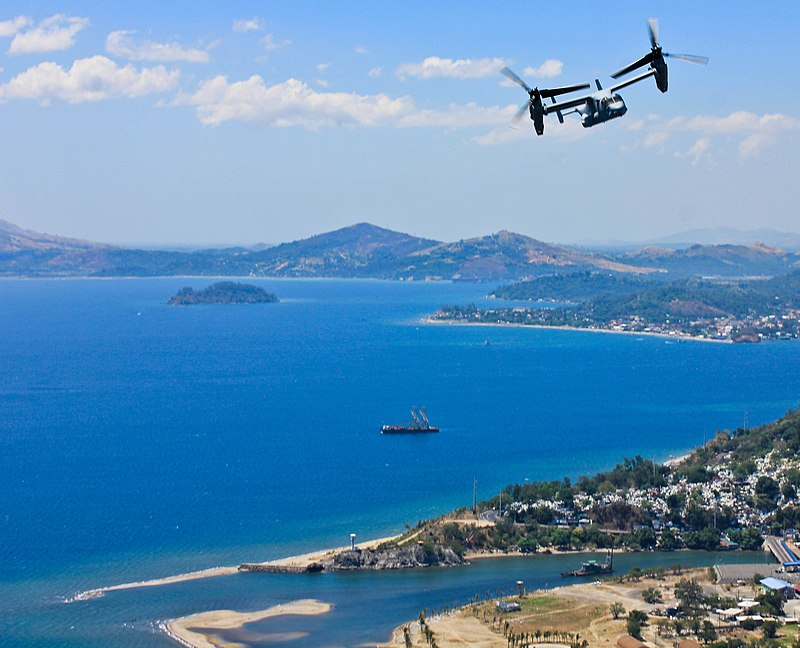
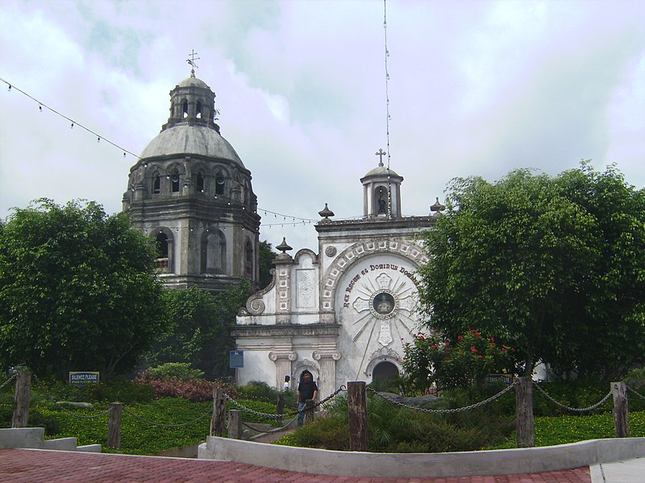
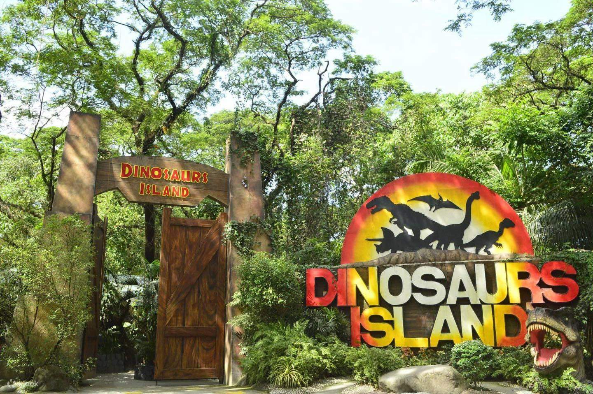
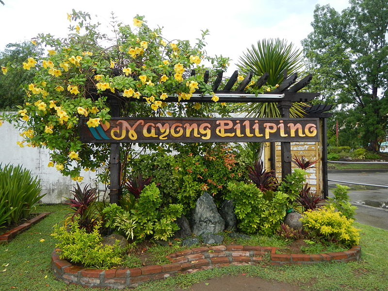
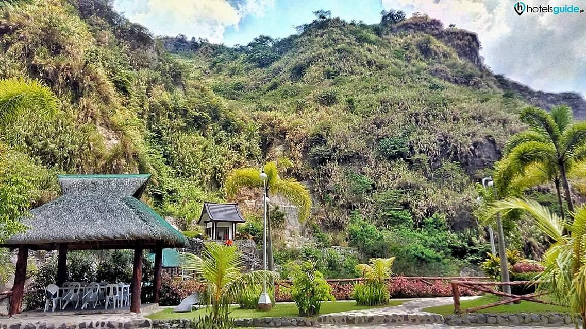
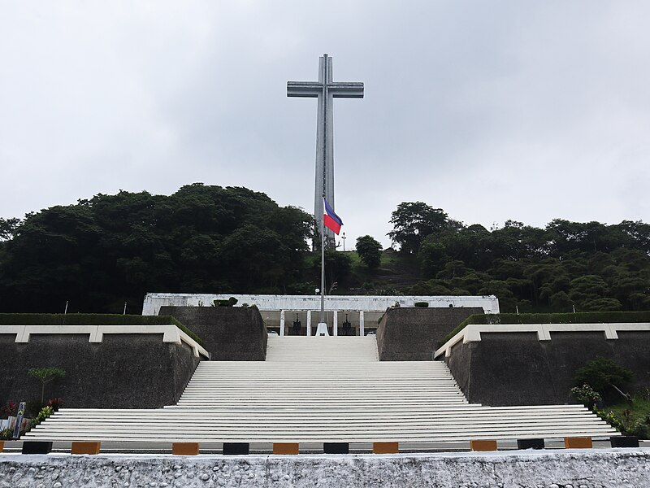

Located in Laguna, Pagsanjan Falls is a majestic waterfall that can be reached by taking a thrilling boat ride up the river. It's a popular spot for nature lovers and adventure seekers.
Taal Volcano
Situated in Batangas, Taal Volcano is one of the most active volcanoes in the Philippines. It offers a unique experience as visitors can hike to the crater and witness the stunning view of the volcano's caldera and the surrounding Taal Lake.
Anawangin Cove

Situated in Zambales, Anawangin Cove is known for its picturesque beauty, with its white sand beach, pine trees, and unique rocky landscape. It’s a popular spot for camping and beach activities.
Hundred Islands National Park
Located in Pangasinan, this national park features a cluster of islands and islets in the Lingayen Gulf. Visitors can explore the islands, go island hopping, and enjoy various water activities.
Subic Bay

A former US naval base turned into a freeport zone, Subic Bay offers a wide range of attractions, including beaches, water parks, wildlife sanctuaries, and adventure activities like jungle survival training and ziplining.
San Guillermo Parish Church

Also known as Bacolor Church, this Baroque-style church in Pampanga is famous for its half-buried façade, a result of the devastating Mount Pinatubo eruption in 1991.
Dinosaurs Island

Located in Pangasinan, this national park features a cluster of islands and islets in the Lingayen Gulf. Visitors can explore the islands, go island hopping, and enjoy various water activities.
Nayong Pilipino Clark

A cultural theme park that showcases the diverse cultures and traditions of the Philippines. It features replicas of famous landmarks, traditional houses, and cultural performances.
Puning Hot Springs

Located in Angeles City, this natural hot spring resort offers relaxation and rejuvenation. Visitors can soak in the warm waters and enjoy therapeutic mud packs.
Mount Samat National Shrine

Situated in Bataan, this shrine commemorates the heroism of Filipino and American soldiers during World War II. It offers a panoramic view of the surrounding area from its towering cross.